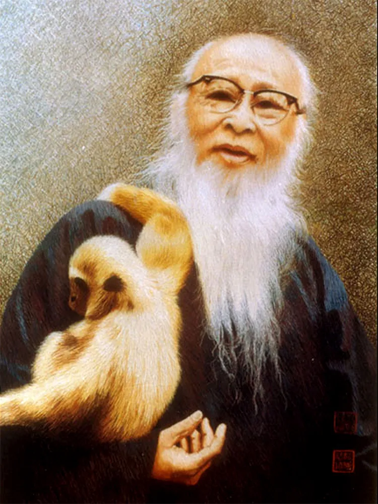
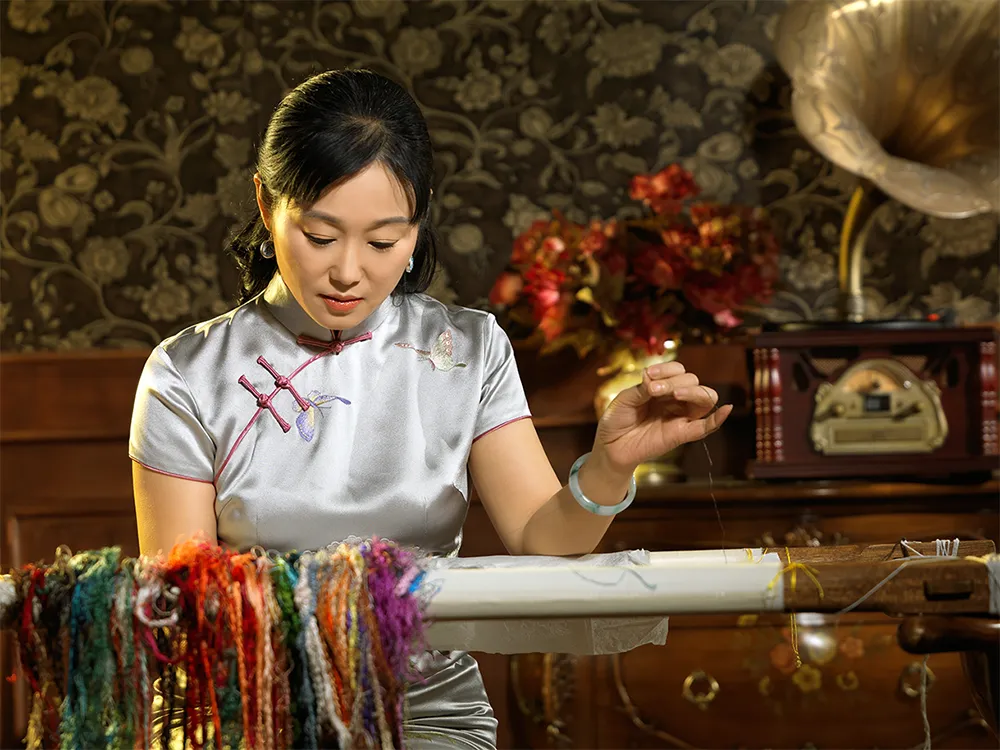
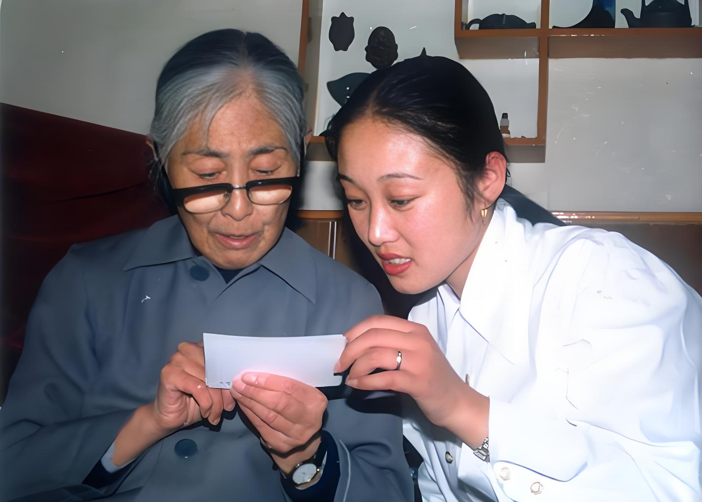
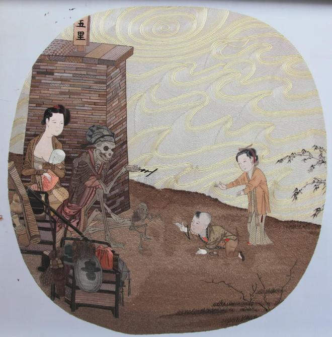
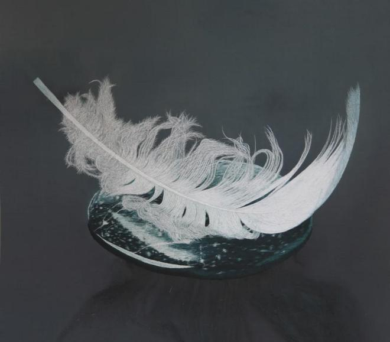
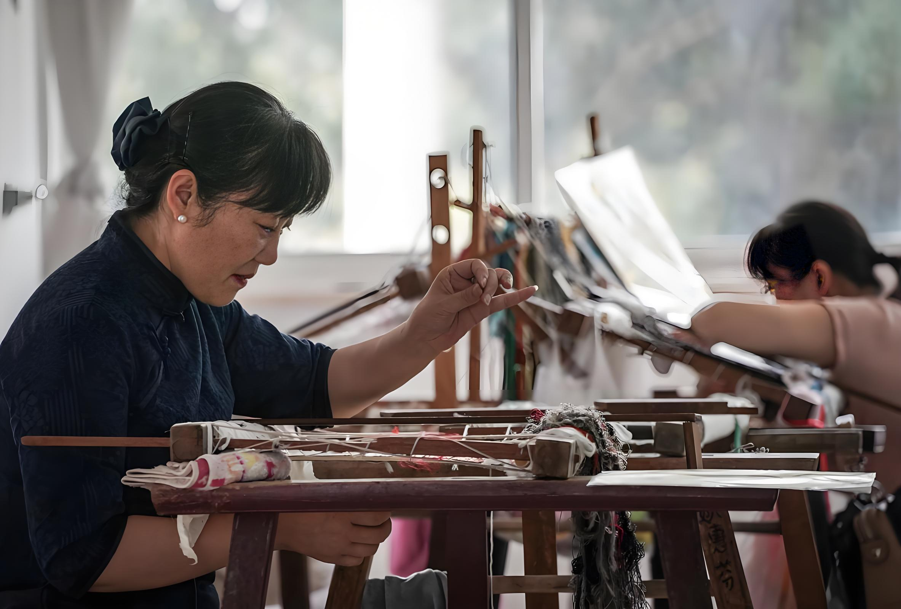

早在1995年，她就凭着一幅形神兼备的《张大千肖像》荣获了“首届中华巧女手工艺品大奖赛”一等奖，被誉为“中华巧女”。

作品《张大千肖像》1995年
传承人简介
姚惠芬，中国工艺美术学会理事、中国工艺美术学会刺绣艺术专委会副秘书长，正高级工艺美术师、国家级非物质文化遗产项目（苏绣）代表性传承人、享受国务院特殊津贴专家、中国刺绣艺术大师、江苏省工艺美术大师，近代苏绣大师沈寿的第四代传人。
在当下苏绣艺界，姚惠芬无疑是一位多才多艺具有开创性的新一代绣娘。

姚惠芬出生于苏州刺绣世家，从艺四十年。从一九九一年至今，所创作的苏绣艺术作品几十次荣获国家级工艺美术大奖及中国民间工艺最高奖——“山花奖”，被誉为“苏绣传人”、“中华巧女”并获得“江苏大工匠”、“江苏省首批紫金文化创意英才”及“全国非物质文化遗产保护工作先进个人”、“中国非遗年度人物”荣誉称号。 近十年来，姚惠芬注重研究当代苏绣的风格和创新，首创了“简针绣”刺绣技法，其作品已被大英博物馆、伦敦大学美术馆、澳大利亚白兔美术馆、中国工艺美术馆、中国丝绸博物馆、苏州博物馆、辽宁博物馆、甘肃简牍博物馆等国内外多家博物馆及建筑大师贝聿铭、美国总统小布什、联合国教科文组织总干事博科娃、阿组莱等名人收藏。
2017年，姚惠芬和她的绣娘团队所创作的系列当代苏绣作品成功入选并参加了“第57届威尼斯双年展中国馆”的展览，开创了当代苏绣进入世界顶级艺术展览的先河，取得了广泛的关注与好评。
年少成名的“三不绣娘”
姚惠芬出生在苏绣世家，从小时候起，她和妹妹就浸泡在"闺阁家家架绣绷，妇姑人人习针巧"的环境中。七、八岁跟着母亲学艺，姚惠芬每天练习刺绣好几个小时，手指被绣针刺出血痕也是常事。随后在父亲的帮助下，姐妹二人走出自家的村子，来到苏州市区拜近代“仿真绣”大师沈寿的第三代传人牟志红及中国工艺美术大师任彗娴为师，全面系统学习了苏绣的技艺。家庭环境的浸染叠加她个人的努力，让她早早就在当地小有名气。
有媒体报道姚惠芬是“三不绣娘”——不喜欢绣重复内容；不想为绣而绣；不相信死绣能绣出好东西。这是姚惠芬对自己的高标准严要求，也是她在创作中努力践行的准则。在她看来，作品如果题材重复，难免会陷入模仿的怪圈，会让她失去创作的兴奋感；而创作如果为绣而绣不加思考和感悟，则会让作品失去灵魂与生机，无法进步。
创作一幅苏绣作品，少则耗时数月，多则需要一两年甚至更长的时间，难免会有疲惫或是感到无聊的时候，姚惠芬的解决办法是“停下来去绣其他的”。通过让自己短暂地“换一换脑子”，让身心脱离疲惫状态，等过一段时间再回看那幅作品，往往会有新的灵感出现。
佳作频出 创新针法
在多年的创作中，姚惠芬并不满足于对传统技法的传承，而是积极探索创新之路。经过长达10年的思考与尝试，2007年，她成功将中国传统刺绣针法与西方素描技法相融合，首创了“简针绣”技法。“简针绣”是一种适合于表现素描、速写人物肖像或动物的新的刺绣方法。这种刺绣方法与以往传统的人物肖像或动物刺绣方法相比，在更深、更广的层面上弃繁从简，以少胜多。
与传统苏绣相比，简针绣最大的特点就是精简。传统苏绣为了绣出作品的层次感，有时要堆砌7、8层甚至更多，而简针绣则是用“少、素、精”的线条来表现作品画面，在颜色、针法上都更加简洁。这看上去是对绣娘的“减负”，但在姚惠芬看来，这实际对绣娘的技艺提出了更高的要求：“因为要做大量的提炼，下针之前要把每一针都想好，其实越是看似简单的东西，越难做。”如此，“简针绣”作品的表现形式更简单、更清晰和更彻底，充分体现一种简洁和纯粹的审美内涵，且在确立新的审美标准与价值的过程中来反映当代苏绣新的表现力与生命力。
2017年，对于姚惠芬是具有特殊意义的一年。她和妹妹姚惠琴与当代艺术家邬建安合作，为威尼斯双年展中国馆创作作品。其中，难度最高、最引人注目的就是以宋朝名画为刺绣蓝本的《骷髅幻戏图系列》。

作品《骷髅幻戏图》（苏绣版）2017 年
传统苏绣讲究柔和雅致，过渡无痕，而这一次，姚惠芬被要求将尽可能多的针法运用在一幅作品里，针法之间还要体现冲突。为此，她运用了传统苏绣的五十多种针法来表现，是苏绣技艺的一次大胆创新实践。作品中，大骷髅以其独特的形态和表情成为视觉焦点，小骷髅的动态和神情也被刻画得十分生动，周围人物的神态和动作也都栩栩如生，将原画中的奇幻氛围和深刻寓意通过苏绣呈现出来，实现了苏绣与当代艺术的结合。
这件作品的创作难度之大，耗时之久，前所未有。姚惠芬回忆说：“当时我们每天都在绣，绣到手指都肿了，甚至有时候绣到半夜两三点钟，第二天还要继续绣。”
这件作品的完成，不仅是对姚惠芬个人创作能力的一次巨大挑战和突破，也为当代苏绣的创新发展树立了一个新的里程碑，展示了当代苏绣在世界艺术舞台上的独特魅力和影响力。
除了《骷髅幻戏图》，姐妹二人还一同创作了 34 幅苏绣作品参展，包括南宋马远《十二水图》以及与其他艺术家合作的《精卫填海》、《遗忘之海202》等，在“第57届威尼斯国际艺术双年展中国馆”展出时，获得了东西方观众的广泛赞誉。

作品《精卫填海之羽毛》2017年
以身践行“匠人精神”
苏绣作为国家级非物质文化遗产项目，也和很多手工艺一样，面临着后继无人的窘境，如今已功成名就的姚惠芬，也深知苏绣传承的重要性与紧迫性。她把培养年轻人作为自己义不容辞的责任，在工作室培训年轻的绣娘同时，她还与苏州的多个学校合作开设了刺绣兴趣班，给大学生们传授刺绣技艺。她形容给年轻人上课就像是“给他们播下苏绣的种子，等待他们慢慢发芽、慢慢成长”。由于苏绣技艺学习周期长、成本高，想要获得经济上的回报也需要时间的积累，种种因素劝退了不少年轻人。但让姚惠芬感到欣慰的是，随着国潮复兴与国家对非遗技艺保护政策的加强，越来越多的年轻人开始对苏绣技艺有认知、感兴趣，愿意沉下心来学习技艺，让苏绣技艺传承得以延续。
自己几十年的刺绣历程诠释了她理解的工匠精神——不需要什么高大上的词藻，只需要每一天都努力把作品做好、做到极致，这就是最朴素也最真挚的匠人匠心。在她的世界里，银针是笔，丝线为墨，绸缎作纸，书写着对苏绣技艺的热爱与坚守，也为苏绣的传承与发展描绘出绚烂的未来画卷。
